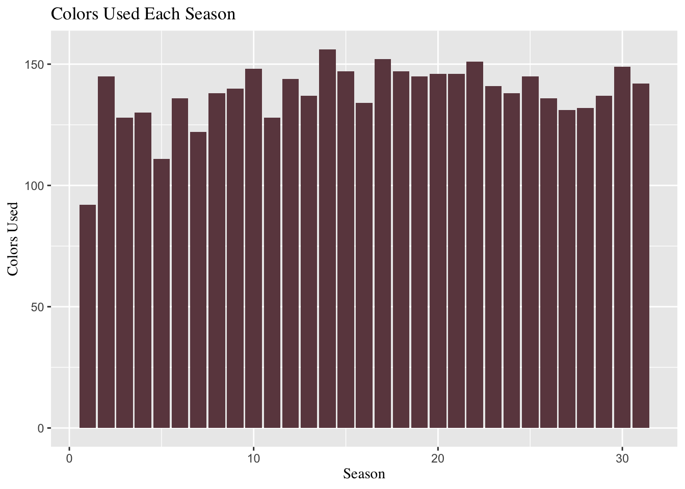
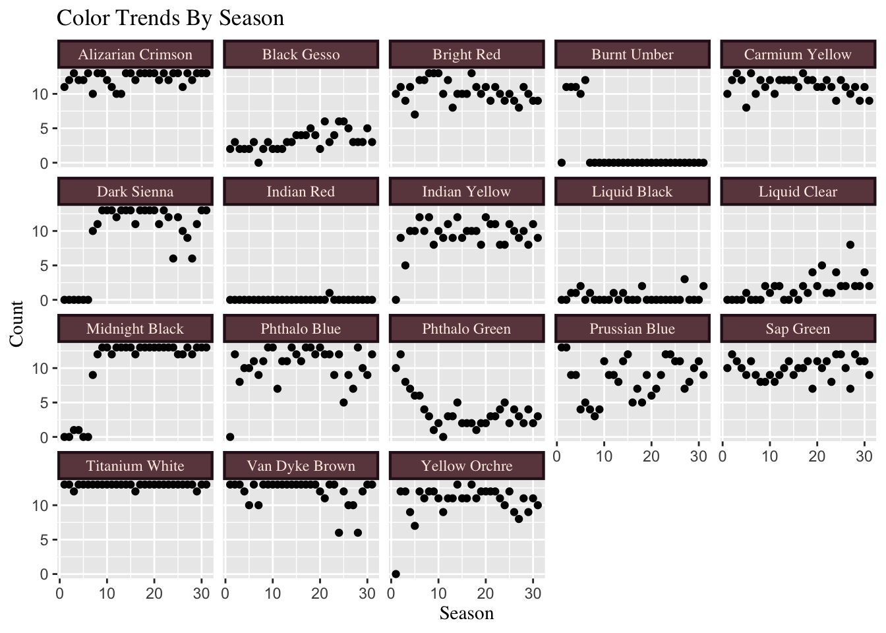

This post uses #TidyTuesday data to create a short analysis of the colors used during the popular television show, The Joy of Painting.
Introduction
The Joy of Painting is a popular television show where the host, Bob Ross teaches the viewer how to paint. It is a calm, patient, and family friendly show, that encourages everyone to enjoy painting.
Lets consider a viewer who is new to painting, and wants to explore its joy by watching a season of “The Joy of Painting”, and following along. This viewer is budget conscious and might be disappointed to spend money on paint supplies that are hardly used. This analysis considers this use case by investigating the frequency of colors used across seasons.
This analysis will only use packages from the Tidyverse.
library(tidyverse)This analysis will only use the Bob Ross data set that is included in TidyTuesday for February 2023.
bob_ross <- read_csv(
"https://raw.githubusercontent.com/jwilber/Bob_Ross_Paintings/master/data/bob_ross_paintings.csv",
)
head(bob_ross)# A tibble: 6 × 28
...1 painting…¹ img_src paint…² season episode num_c…³ youtu…⁴ colors color…⁵
<dbl> <dbl> <chr> <chr> <dbl> <dbl> <dbl> <chr> <chr> <chr>
1 1 282 https:… A Walk… 1 1 8 https:… "['Al… ['#4E1…
2 2 283 https:… Mt. Mc… 1 2 8 https:… "['Al… ['#4E1…
3 3 284 https:… Ebony … 1 3 9 https:… "['Al… ['#4E1…
4 4 285 https:… Winter… 1 4 3 https:… "['Pr… ['#021…
5 5 286 https:… Quiet … 1 5 8 https:… "['Al… ['#4E1…
6 6 287 https:… Winter… 1 6 4 https:… "['Bl… ['#000…
# … with 18 more variables: Black_Gesso <dbl>, Bright_Red <dbl>,
# Burnt_Umber <dbl>, Cadmium_Yellow <dbl>, Dark_Sienna <dbl>,
# Indian_Red <dbl>, Indian_Yellow <dbl>, Liquid_Black <dbl>,
# Liquid_Clear <dbl>, Midnight_Black <dbl>, Phthalo_Blue <dbl>,
# Phthalo_Green <dbl>, Prussian_Blue <dbl>, Sap_Green <dbl>,
# Titanium_White <dbl>, Van_Dyke_Brown <dbl>, Yellow_Ochre <dbl>,
# Alizarin_Crimson <dbl>, and abbreviated variable names ¹painting_index, …Exploritroy Data Analysis
About “The Joy of Painting”:
31 total seasons.
13 episodes per season.
403 total episodes.
When we consider the use case above, and that a canvas costs about $3. Then a budge conscious user can assume their budge for paint canvas will be about $40 per season, and about $1,210 for all 403 episodes.
Show Code
episodes_per_season <- bob_ross %>%
dplyr::group_by(season) %>%
dplyr::summarise(total_episodes = n())
episodes_per_season %>% base::t() [,1] [,2] [,3] [,4] [,5] [,6] [,7] [,8] [,9] [,10] [,11] [,12]
season 1 2 3 4 5 6 7 8 9 10 11 12
total_episodes 13 13 13 13 13 13 13 13 13 13 13 13
[,13] [,14] [,15] [,16] [,17] [,18] [,19] [,20] [,21] [,22]
season 13 14 15 16 17 18 19 20 21 22
total_episodes 13 13 13 13 13 13 13 13 13 13
[,23] [,24] [,25] [,26] [,27] [,28] [,29] [,30] [,31]
season 23 24 25 26 27 28 29 30 31
total_episodes 13 13 13 13 13 13 13 13 13Colors used:
On average 138 colors were used each season.
The least amount of colors used in a single season was 92 in season 1.
The most amount of colors used in a single season was 156 in season 14.
Show Code
br_colors <- bob_ross %>%
group_by(season) %>%
summarise(total_num_colors = sum(num_colors))
mean_colors <- mean(br_colors$total_num_colors)
min_colors <- min(br_colors$total_num_colors)
max_colors <- max(br_colors$total_num_colors)
br_colors %>% t() [,1] [,2] [,3] [,4] [,5] [,6] [,7] [,8] [,9] [,10] [,11] [,12]
season 1 2 3 4 5 6 7 8 9 10 11 12
total_num_colors 92 145 128 130 111 136 122 138 140 148 128 144
[,13] [,14] [,15] [,16] [,17] [,18] [,19] [,20] [,21] [,22]
season 13 14 15 16 17 18 19 20 21 22
total_num_colors 137 156 147 134 152 147 145 146 146 151
[,23] [,24] [,25] [,26] [,27] [,28] [,29] [,30] [,31]
season 23 24 25 26 27 28 29 30 31
total_num_colors 141 138 145 136 131 132 137 149 142Show Code
ggplot(br_colors,
aes(x = season,
y = total_num_colors)) +
geom_col(fill = "#6c464e") +
ggtitle("Colors Used Each Season") +
xlab("Season") +
ylab("Colors Used") +
theme(
plot.title = element_text(family = "Times"),
axis.title.x = element_text(family = "Times"),
axis.title.y = element_text(family = "Times")
)
Color Trends:
- Indian Red is the color that is least used. It was only featured once in season 22 episode 1 in the Painting Autumn Images shown below.

of big white clouds, and surrounded by trees.
- Burnt Umber was only used in 55 episodes. The last painting it was used in was from season 6 episode 13 and is called Blaze of Color, shown below.

surrounded by yellow and light green grass, trees, and
a vibrant blue, pink, yellow, orange, and red sunset.
- Dark Sienna may have been used instead of Burnt umber. It can in the episode of the last season, season 31 episode 13, in a painting called Wilderness Day, shown below.

trees, bushes, and a misty mountain in the background.
Show Code
a <- bob_ross %>%
filter(Burnt_Umber == 1) %>%
summarise(episode = episode,
season = season,
img_src = img_src,
painting_title = painting_title,
youtube_src = youtube_src)
b <- bob_ross %>%
filter(Dark_Sienna == 1) %>%
summarise(episode = episode,
season = season,
img_src = img_src,
painting_title = painting_title,
youtube_src = youtube_src)
br_subset <- bob_ross %>%
group_by(season) %>%
summarise(black_gesso = sum(Black_Gesso),
bright_red = sum(Bright_Red),
burnt_umber = sum(Burnt_Umber),
carmium_yellow = sum(Cadmium_Yellow),
dark_sienna = sum(Dark_Sienna),
indian_red = sum(Indian_Red),
indian_yellow = sum(Indian_Yellow),
liquid_black = sum(Liquid_Black),
liquid_clear = sum(Liquid_Clear),
midnight_black = sum(Midnight_Black),
phthalo_blue = sum(Phthalo_Blue),
phthalo_green = sum(Phthalo_Green),
prussian_blue = sum(Prussian_Blue),
sap_green = sum(Sap_Green),
titanium_white = sum(Titanium_White),
van_dyke_brown = sum(Van_Dyke_Brown),
yellow_orchre = sum(Yellow_Ochre),
alizarian_crimson = sum(Alizarin_Crimson)) %>%
pivot_longer(
!season,
names_to = "color",
values_to = "count")
color_labs <- c(black_gesso = "Black Gesso",
bright_red = "Bright Red",
burnt_umber = "Burnt Umber",
carmium_yellow = "Carmium Yellow",
dark_sienna = "Dark Sienna",
indian_red = "Indian Red",
indian_yellow = "Indian Yellow",
liquid_black = "Liquid Black",
liquid_clear = "Liquid Clear",
midnight_black = "Midnight Black",
phthalo_blue = "Phthalo Blue",
phthalo_green = "Phthalo Green",
prussian_blue = "Prussian Blue",
sap_green = "Sap Green",
titanium_white = "Titanium White",
van_dyke_brown = "Van Dyke Brown",
yellow_orchre = "Yellow Orchre",
alizarian_crimson = "Alizarian Crimson")
html_colors <- c(
"#000000", "#DB0000", "#8A3324",
"#FFEC00", "#5F2E1F", "#CD5C5C",
"#FFB800", "#000000", "#FFFFFF",
"#000000", "#0C0040", "#102E3C",
"#021E44", "#0A3410", "#FFFFFF",
"#221B15", "#C79B00", "#4E1500")
# html_colors <- rep(html_colors, 31)
# br_subset$html_colors <- html_colors
ggplot(br_subset, aes(x = season, y = count)) +
geom_point() +
facet_wrap(
vars(color),
labeller = labeller(color = color_labs)) +
ggtitle("Color Trends By Season") +
xlab("Season") +
ylab("Count") +
theme(
plot.title = element_text(family = "Times"),
axis.title.x = element_text(family = "Times"),
axis.title.y = element_text(family = "Times"),
strip.background = element_rect(
color="#2c1320",
fill= "#6c464e",
size=1.5,
linetype="solid"),
strip.text.x = element_text(
family = "Times",
color = "#feebe2")
)
Conclusion
Considering the use case of a viewer who is:
new to painting
budge conscious
disappointed when spending money on something they hardly used
My recommendations would be:
Each season has the same amount of episodes, so the user might consider viewing the paintings from each season, and deciding which season of paintings they like best before selecting the color they will purchase. They will enjoy painting more if they know they will enjoy the end result.
Season 1 uses the least amount of colors, and might be a good place to start for someone who is new to painting, and cannot otherwise decide which seasons paintings they enjoy the most.
Consider using similar colors interchangeably such as Dark Sienna instead of Burnt Umber and Indian Red . The user might need to mix in more black or white, to get a similar result to the painting they are recreating, which is another thing to consider when purchasing supplies.
What other questions would our given use case be curious about answering before investing their time into “The Joy of Painting”?
Should they buy more of one paint (such as black and white) over others (such as purple)?
Is there any correlation between painting title and colors used?
What clusters of paintings use similar color palettes?
What are some other use cases for this data?
An event planner who wants to pick one painting with the least amount of colors and complexity to paint with a group of people of varying experience levels.
An experienced painter who wants to wants to work with the most colors possible.
A homeowner who wants to recreate a painting with colors that will compliment their interier design choices.